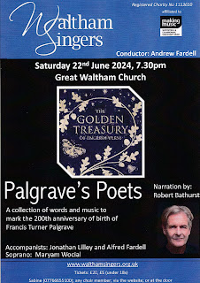
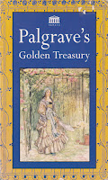
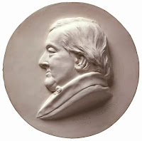
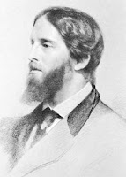
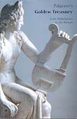

{kind=link}
Sir Francis's oldest son, Francis Turner Palgrave was born 200 years ago in 1824. For our summer concert, the Waltham Singers, will present a Words-and Music programme mixing settings of songs by poets included in the Golden Treasury, with poems mainly, but not exclusively chosen from 'Palgrave'. I put the anthologist's name in quote marks because since the initial publication of The Golden Treasury in 1861, new editions have been published and many new poems added. It's as if 'Palgrave' has become some sort of Quality Mark. Andrew Fardell, our musical director, attracted by the idea of an anthology as a living format, has snuck in a song setting and poem by two of his own school students. If you ever listen to the Radio 3 Words and Music, broadcast Sundays at 6pm, you'll know what a creative mix this can be, with old favourites and unexpected juxtapositions. We are feeling very fortunate that the actor Robert Bathurst has agreed to be our narrator.
 |
| The 1861 Palgrave in a modern edition |
{kind=link}
The sales success of FT Palgrave's The Golden Treasury of the Best Songs and Lyrical Poems in the English Language took its publishers by surprise. The initial print-run of 2000 copies in July 1861, was followed by an additional 1,200 copies in October, 3,000 in November, then a further 24 printings bringing the total to 140,000 copies before 1897, the year of the anthologist’s death. That was the year he produced his own second series, and although that new edition attracted some criticism, sales continued to average 10,000 a year until the Second World War. When American poet Ezra Pound wrote to Macmillan Publishing in 1916, with an ambitious suggestion for a 12-volume collection of the ‘best’ poetry from around the world, to replace ‘that old doddard Palgrave’, his letter sparked outrage. Sales of The Golden Treasury had underpinned the financial success of the firm.
Early readers took copies of The Golden Treasury to study as they walked to work in mines and factories; it offered comfort in the trenches of WW1 and the deserts of WW2. Copies were standard in c20th school libraries and a popular choice for christening or significant birthday presents. Imperceptibly ‘Palgrave’ became a brand. The most modern edition, published by Oxford University Press, is twice the size of the original and subtly different in its overall aims and achievement.
When Francis Turner Palgrave made his original selection, he aimed to offer the Best Songs and Lyrical Poems in the English Language and he also believed it possible to achieve completeness, within his clearly defined boundaries. This was not such an unattainable ambition in 1861 when the reading and writing community was so much smaller. In 1861 only two-thirds of the male population, and just over half the women, had even basic literacy (often defined as the ability to sign their name in the marriage register). Forster’s 1870 Education Act was scarcely a twinkle in the eye and the techniques of mass-market publishing were only beginning to be put into practice. Eighteenth century changes to copyright law, however, had encouraged the ‘catchpenny’ production of cheap editions of classic texts and the works of the poets like Milton and Shakespeare. This lowered the social class of potential readers and was frequently opposed. It was ‘like letting the mob in to vote’, wrote poet Thomas Moore. (In 1861 the franchise remained tightly restricted.)
 |
| The father |
{kind=link}
Even worse than cheap editions were the popular collections of ‘Beauties’ and ‘Elegant extracts’, which selected well known passages and snippets from famous authors. ‘Excerpts, selections, pieces picked for quaintness or curiosity, pall the intellectual appetite. Elegant extracts, Anthologies are sickly things: cut flowers have no vitality – the single growing violet lives sweetly and lasts; the splendid bouquet decays into trash.’ Sir Francis Palgrave was no friend to dumbing-down.
His son, educated at home with his highly-achieving brothers, learning Latin from age 4 and Greek from 7, winning all the prizes when he was finally sent to school at 14 (the age by which working class children had already left) then gaining a scholarship to Balliol College, Oxford, had quite a different approach. FT Palgrave was a republican, a political and social reformer and a passionate supporter of working-class education. Despite his personal brilliance as a classicist, he understood that a reliance on Latin and Greek, and insistence on lengthy, expensive books, posed an impossible barrier to individual self-improvement. He also thought that the better-educated people of his generation were in danger of reading too much and too superficially. Instead, he wished to offer all his readers the Best, a book that would repay repeated reading and deep study, whatever someone's social class or educational background.
 |
| The son |
{kind=link}
Palgrave’s concept was clear. No living poet would be included in his anthology as they might not yet have achieved their personal ‘Best’. Lyric poetry was defined as poetry expressing a single thought, feeling or situation in relatively simple language. This excluded dramatic, didactic, narrative, descriptive, humorous or epic poems – unless they were also short, swift-moving and emotive. Lyric poems were appropriate for less well-educated people who worked long days: their language and structure would be relatively simple and memorable, but their quality would still be the Best. Palgrave read every edition and collection available to him at least twice (a feat then; an impossibility today), made an initial selection, then passed this to two of his closest friends for comment, and finally to poet laureate Alfred Tennyson, the friend who had first encouraged his idea when they were on a walking holiday together. It could be argued that the success of The Golden Treasury fixed the idea of English poetry in people’s minds as intrinsically melodious, with the lyric form at its heart.
An anthology is, as Sir Francis Palgrave made clear, a gathering of poetic flowers into some sort of verbal bouquet or garland. The art required is not just initial selection but also arrangement. FT Palgrave wanted a light touch approach. Although he was worked as an examiner in the Whitehall Department of Education, he didn’t want to produce a book of instruction to be worked through in set order; he wanted his readers to have a choice of ways to read. They could read sequentially, or dip in and out, making their own choices and connections. He liked Shelley’s idea of all poets being part of a universal mind, contributing differently to one great Poem, but he also recognised that voices from different periods expressed the differing experience of their times. He sorted his material into four broadly chronological sections, then arranged the poems by theme and tone, rather than by author or composition date or some other external criteria.
 |
| The current edition in six books |
{kind=link}
This creativity in arrangement is the crucial difference between an anthology and a selection. I would suggest that books five and six, later additions to Palgrave, edited by John Press and published most recently in 1992, are selections, but not anthologies. To my ears the editor has worked through well-known poets born in the UK since Palgrave's time and has chosen a handful of examples from each, offering something a little like a reference book. It's lost the personal touch and the sense that the poems are working with each other to offer a statement specific to an individual in his time.
The extended 'Palgrave' however becomes a database from which new selections can be made, new anthologies created. Both selection and arrangement matter. The playlist for our concert is itself an anthology. Words and music, selected and arranged in a particular order, all of them unique and lovely but changed slightly by their relationship to whatever comes before or after. I hope our audience on June 22nd 2024 will accept ‘Palgrave’s Poets’ as a summer’s evening bouquet and that it will remain fragrant in their memories.
{kind=link}
Christopher Ricks’ Penguin Classics edition of The Golden Treasury was especially useful in writing this article, as was The Treasuries: Poetry Anthologies and the Making of British Culture by Clare Bucknell, published Head of Zeus 2023.
{kind=link}
{kind=link}
You can buy concert tickets here